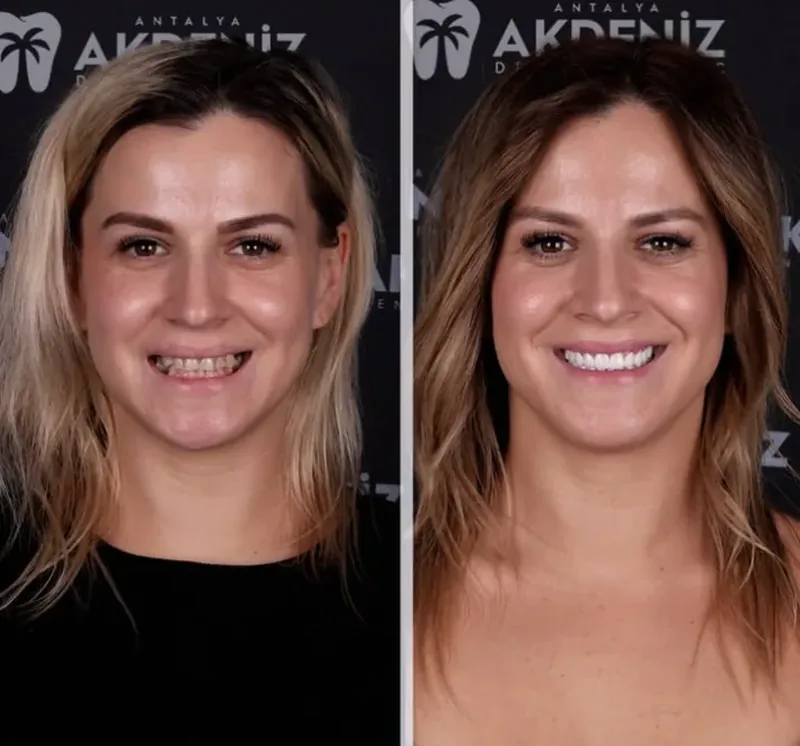

Licówki E-max wytrzymują zwykle od 10 do 15 lat, a przy dobrej pielęgnacji wiele z nich służy 20 lat i dłużej. Dotyczy to w tym samym stopniu licówek E-max w Turcji, ponieważ pacjenci leczeni w Antalyi otrzymują tę samą ceramikę IPS e.max, której używają dentyści w Wielkiej Brytanii i w całej Europie. Licówki E-max wykonuje się z dwukrzemianu litu – ceramiki szklanej, która jest jednocześnie wytrzymała i przezierna – a długoterminowe badania kliniczne wskazują na wskaźnik przetrwania powyżej 95% po dziesięciu latach. To, jak długo licówki posłużą konkretnemu pacjentowi, zależy przede wszystkim od zgryzu, zgrzytania zębami, stanu dziąseł i jakości cementowania.
Ten poradnik wyjaśnia, co pokazują badania, które czynniki skracają lub wydłużają żywotność licówek E-max, co dzieje się z zębami pod spodem oraz jak dentyści dbają o licówki i wymieniają je na przestrzeni lat.
Żywotność licówek E-max w skrócie
- Typowa żywotność: od 10 do 15 lat, często 20 lub więcej
- Przetrwanie po 10 latach w badaniach: od 95,5% do 97,4%
- Najczęstsze powody wymiany: pęknięcie i odklejenie, zwykle związane ze zgrzytaniem zębami lub przeciążeniem zgryzu
- Najważniejszy pojedynczy krok ochronny: szyna nocna dla pacjentów, którzy zaciskają zęby lub nimi zgrzytają
- Wizyty kontrolne: co sześć miesięcy, u dowolnego dentysty
W tym poradniku
- Co mówią badania o żywotności licówek E-max
- Licówki E-max a licówki porcelanowe i kompozytowe: porównanie żywotności
- Od czego zależy, jak długo wytrzymują licówki E-max
- Co dzieje się z zębami pod licówkami E-max?
- Co dzieje się z licówkami E-max po 15–20 latach?
- Czy licówki E-max wykonane w Turcji wytrzymują równie długo?
- Jak przedłużyć żywotność licówek E-max
- Czy licówki E-max można naprawić lub wymienić?
- Najczęściej zadawane pytania
Co mówią badania o żywotności licówek E-max
Licówki E-max są stosowane klinicznie od ponad dwudziestu lat, więc ich żywotność nie jest już szacunkiem opartym wyłącznie na testach laboratoryjnych. Trzy badania dają jasny obraz.
Retrospektywne badanie z 2019 roku opublikowane w International Journal of Prosthodontics obejmowało 364 tłoczone licówki z dwukrzemianu litu u 41 pacjentów obserwowanych przez dziesięć lat. Wskaźnik przetrwania po 10 latach wyniósł 97,4%. Powikłania dotyczyły zaledwie 1,64% licówek: pęknięcia 0,55%, a odklejenia 1,09%.
Przegląd systematyczny z 2021 roku w Journal of Clinical Medicine połączył 25 badań klinicznych i 6500 licówek porcelanowych. Szacowany wskaźnik przetrwania po 10 latach wyniósł 95,5%. Przegląd wykazał też, że licówki nieskaleniowe, czyli grupa obejmująca licówki E-max, zawodziły rzadziej niż tradycyjne licówki z porcelany skaleniowej, a większość pęknięć i odklejeń występowała w pierwszych latach po osadzeniu, a nie pod koniec życia licówki.
Retrospektywne badanie z 2024 roku w czasopiśmie Cureus objęło 28 pacjentów z licówkami E-max, z których połowie założono je ponad pięć lat wcześniej. W 89,3% przypadków licówki nie wykazywały istotnych zmian; przebarwienia brzeżne odnotowano w 7,1%, a odklejenie w 3,6%. Autorzy powiązali stwierdzone problemy głównie ze złą higieną jamy ustnej, paleniem i zgrzytaniem zębami, a nie z samą ceramiką.
Łącznie te wyniki wyjaśniają, dlaczego dentyści podają od 10 do 15 lat jako ostrożny przedział dla licówek E-max: sam materiał rzadko zawodzi, a większość pojawiających się problemów wynika ze zgryzu, higieny jamy ustnej lub nawyków.
Licówki E-max a licówki porcelanowe i kompozytowe: porównanie żywotności
Wybrany materiał wyznacza oczekiwaną żywotność licówki. Poniższa tabela porównuje opcje najczęściej omawiane podczas konsultacji dotyczącej licówek.
| Materiał | Typowa żywotność | Główna zaleta | Najczęściej wybierane do |
|---|---|---|---|
| Licówki E-max (dwukrzemian litu) | 10–15 lat, często 20 lub więcej | Wytrzymałość połączona z naturalną przeziernością | Zębów przednich i metamorfoz uśmiechu |
| Licówki z porcelany skaleniowej | 7–15 lat | Bardzo cienkie warstwy | Minimalnych zmian kształtu zębów |
| Licówki kompozytowe | 5–7 lat | Szybkie wykonanie i łatwa naprawa | Drobnych korekt i młodszych pacjentów |
Licówki E-max są tłoczone lub frezowane z jednego bloku dwukrzemianu litu, dzięki czemu nie mają słabej warstwy między rdzeniem a powłoką zewnętrzną. To jeden z powodów, dla których są bardziej odporne na odpryski niż porcelana warstwowa. Kompozyt natomiast chłonie przebarwienia i stopniowo się ściera, dlatego znacznie wcześniej wymaga polerowania lub odnowienia. Pacjenci, którzy chcą dokładniej porównać ceramiki, mogą zajrzeć na stronę zabiegu licówki E-max w Turcji lub do poradnika o koronach cyrkonowych.
Sprawdź, czy licówki E-max pasują do Twoich zębów
Wyślij kilka zdjęć swojego uśmiechu, aby otrzymać bezpłatną ocenę online od Akdeniz Dental Clinic w Antalyi. Dentysta doradzi, jaki materiał, ile licówek i jaki plan leczenia będą odpowiednie w Twoim przypadku.
Od czego zależy, jak długo wytrzymują licówki E-max
Dwóch pacjentów może otrzymać identyczne licówki E-max, a po dziesięciu latach mieć zupełnie różne rezultaty. Różnica niemal zawsze wynika z poniższych czynników.
Zgrzytanie i zaciskanie zębów (bruksizm)
Zgrzytanie zębami to najczęstsza przyczyna wczesnego pęknięcia licówek. Nocne zaciskanie zębów obciąża zęby przednie siłami wielokrotnie większymi niż podczas normalnego żucia. Przed leczeniem dentyści sprawdzają oznaki bruksizmu, takie jak spłaszczone brzegi, starte szkliwo i napięte mięśnie żuchwy, a pacjenci, którzy zgrzytają zębami, otrzymują szynę nocną po zacementowaniu licówek.
Planowanie zgryzu
Licówka, która styka się z zębem przeciwstawnym zbyt wcześnie lub zbyt mocno, przyjmuje powtarzające się uderzenia przy każdym zagryzieniu. Staranna analiza i korekta zgryzu podczas wizyty, na której osadza się licówki, równomiernie rozkłada obciążenie. Przegląd z 2021 roku wykazał też mniejszy odsetek niepowodzeń, gdy licówka pokrywała brzeg sieczny zęba – o tym dentysta decyduje na etapie planowania.
Szkliwo i jakość cementowania
Licówki E-max najmocniej wiążą się ze szkliwem. Opracowanie, przy którym brzegi licówki pozostają w obrębie szkliwa, zapewnia trwałe uszczelnienie i zmniejsza ryzyko odklejenia. Samo cementowanie – z wytrawianiem ceramiki kwasem, silanem i cementem żywiczym utwardzanym światłem – musi przebiegać w suchych, kontrolowanych warunkach, dlatego doświadczenie dentysty ma równie duże znaczenie jak materiał.
Stan dziąseł i higiena jamy ustnej
Ceramika nie ulega próchnicy, ale naturalny ząb przy brzegu licówki już tak. Płytka nazębna pozostawiona przy linii dziąseł prowadzi do stanu zapalnego, recesji dziąseł, a z czasem do próchnicy przy brzegu. Codzienne szczotkowanie i nitkowanie chroni uszczelnienie między licówką a zębem.
Nawyki i dieta
Obgryzanie paznokci, długopisów czy lodu, otwieranie opakowań zębami i gryzienie bardzo twardych pokarmów zębami przednimi może spowodować odprysk każdej ceramiki. Palenie nie przebarwia powierzchni ceramiki, ale przebarwia brzegi i szkodzi dziąsłom, które podtrzymują licówki.
Praca laboratorium
Dopasowanie licówki na brzegach wpływa na to, jak dobrze się uszczelnia. Licówki wykonane w laboratorium, które współpracuje bezpośrednio z dentystą prowadzącym leczenie, można sprawdzić i skorygować przed cementowaniem. W Akdeniz Dental Clinic licówki powstają we własnym laboratorium kliniki, Akdeniz Dental Lab, więc odcień, kształt i dopasowanie dentysta i technik ustalają osobiście.
Co dzieje się z zębami pod licówkami E-max?
Zęby pod licówkami E-max pozostają żywymi zębami z własnym nerwem i ukrwieniem. Aby zrobić miejsce na licówkę, dentysta szlifuje cienką warstwę szkliwa z przedniej powierzchni, zwykle około 0,3–0,5 mm, czyli mniej więcej grubość paznokcia. W niektórych przypadkach licówki o minimalnym opracowaniu wymagają jeszcze mniej.
Po zacementowaniu licówki ząb i ceramika zachowują się jak jedna całość. Ząb pod spodem może jeszcze przez krótki czas po leczeniu reagować na temperaturę, a ta nadwrażliwość zwykle ustępuje w ciągu kilku dni. W dłuższej perspektywie najważniejsze jest utrzymanie w czystości brzegu, w którym licówka styka się z zębem, ponieważ to jedyne miejsce, w którym może zacząć się próchnica.
Ponieważ szkliwo zostało oszlifowane, ząb, który otrzymał licówkę, pozostaje pokryty do końca życia – tą samą licówką albo nową, gdy nadejdzie czas wymiany. Pacjenci, którzy nie są pewni, czy dla danego zęba lepsza będzie licówka, czy korona, mogą przeczytać poradnik licówki czy korony.
Co dzieje się z licówkami E-max po 15–20 latach?
Zadbane licówki E-max często dobrze wyglądają i funkcjonują znacznie dłużej niż 15 lat. Ceramika nie blaknie ani nie traci połysku tak jak kompozyt. Zmiany widoczne po wielu latach zwykle wynikają ze zmian w jamie ustnej wokół licówek, a nie z samych licówek:
- Z wiekiem dziąsła mogą się nieco cofnąć, odsłaniając cienki pasek naturalnego zęba przy brzegu licówki.
- Naturalne zęby obok licówek mogą z czasem ciemnieć, przez co odcienie nie są już tak dobrze dopasowane.
- Cement na brzegach może lekko się przebarwić.
Część tych zmian można skorygować profesjonalnym polerowaniem lub wybieleniem sąsiednich zębów. Gdy wygląd lub dopasowanie licówki wyraźnie się zmieni, dentysta ją wymienia. Ponieważ ząb został ukształtowany podczas pierwszego leczenia, wymiana zwykle wymaga bardzo niewielkiego dodatkowego opracowania.
Czy licówki E-max wykonane w Turcji wytrzymują równie długo?
Tak. Żywotność zależy od materiału, pracy laboratorium, planowania zgryzu i domowej pielęgnacji pacjenta, a nie od kraju, w którym licówki zostały założone. IPS e.max produkuje ten sam producent, Ivoclar, a ta sama ceramika z dwukrzemianu litu jest stosowana w Antalyi, Londynie i Berlinie.
Liczy się sposób zaplanowania leczenia. W Akdeniz Dental Clinic leczenie licówkami E-max zaczyna się od skanu cyfrowego i projektu uśmiechu, dzięki czemu kształt i długość każdej licówki są planowane z uwzględnieniem twarzy i zgryzu pacjenta, zanim jakikolwiek ząb zostanie opracowany. Licówki powstają następnie we własnym laboratorium kliniki, a całe leczenie trwa zwykle od 5 do 7 dni, w zależności od zakresu leczenia.
Po powrocie do domu pacjenci mogą korzystać ze swoich licówek E-max przez wiele lat, poddając się rutynowej opiece stomatologicznej w lokalnej klinice dentystycznej.
Jak przedłużyć żywotność licówek E-max
Większość tego, co decyduje o żywotności licówek E-max, dzieje się w latach po leczeniu. Dentyści dają pacjentom następujące rady:
- Noś szynę nocną, jeśli zgrzytasz lub zaciskasz zęby. To najskuteczniejszy pojedynczy sposób zapobiegania pęknięciom.
- Szczotkuj zęby dwa razy dziennie miękką szczoteczką i nieścierną pastą. Silnie ścierne pasty wybielające mogą z czasem zmatowić glazurę.
- Codziennie czyść przestrzenie międzyzębowe nicią lub szczoteczkami międzyzębowymi, aby linia dziąseł pozostała zdrowa.
- Nie używaj zębów przednich jako narzędzi. Lód, długopisy, paznokcie, kapsle i opakowania nie powinny mieć kontaktu z licówkami.
- Krój twarde pokarmy na mniejsze kawałki i żuj je zębami tylnymi.
- Noś ochraniacz na zęby podczas uprawiania sportów kontaktowych.
- Chodź na wizyty kontrolne i profesjonalne czyszczenie co sześć miesięcy. Wczesne oznaki zużycia czy zmian dziąseł są znacznie łatwiejsze do opanowania niż późne.
Czy licówki E-max można naprawić lub wymienić?
Odpowiedź zależy od rodzaju uszkodzenia:
| Problem | Zwykłe rozwiązanie |
|---|---|
| Mały odprysk na brzegu | Polerowanie lub niewielka naprawa kompozytem |
| Licówka odpada w całości | Oczyszczenie i ponowne zacementowanie tej samej licówki |
| Pęknięcie lub większe złamanie | Wymiana na nową licówkę |
| Przebarwienie na brzegu | Profesjonalne polerowanie; wymiana, jeśli przebarwienie znajduje się pod licówką |
| Recesja dziąseł z widocznym brzegiem | Wymiana, czasem połączona z leczeniem dziąseł |
Jeśli licówka odpadnie, należy przechować ją w małym pudełku lub miękkiej ściereczce i zabrać do dentysty. Nigdy nie należy używać kleju domowego, ponieważ uszkadza on zarówno licówkę, jak i ząb.
Oznaki, że licówka E-max wymaga uwagi
- Odprysk, pęknięcie lub szorstki brzeg
- Licówka, która wydaje się luźna lub przesuwa się pod naciskiem
- Ciemna linia w miejscu styku licówki z dziąsłem
- Nadwrażliwość lub dyskomfort wokół jednego zęba
- Krwawiące lub obrzęknięte dziąsła wokół licówek
- Kolor, który nie pasuje już do sąsiednich zębów
Pacjenci, którzy zauważą którąkolwiek z tych oznak, mogą wysłać do kliniki zdjęcia lub zdjęcia RTG w celu badania online – dotyczy to także pacjentów, którym licówki założono w innej klinice.
Planowanie licówek E-max w Antalyi w Turcji
Licówki E-max należą do najtrwalszych zabiegów stomatologii estetycznej, jeśli są dobrze zaplanowane i pielęgnowane. Pacjenci rozważający leczenie zwykle chcą wiedzieć jeszcze trzy rzeczy: ile to kosztuje, ilu licówek potrzebują i jak będzie wyglądał efekt.
- Etapy leczenia, koszty i pakiety są opisane na stronie licówki E-max w Antalyi.
- Kompleksowe metamorfozy uśmiechu łączące kilka zabiegów opisuje strona Hollywood smile.
- Wybór naturalnego odcienia wyjaśnia poradnik o odcieniach zębów.
- Prawdziwe efekty można zobaczyć w galerii przed i po.
Żywotność licówek E-max: najczęściej zadawane pytania
Zaplanuj trwałe licówki E-max w Antalyi
Prześlij zdjęcia swojego uśmiechu przez WhatsApp i otrzymaj indywidualny plan leczenia, informację, ilu licówek potrzebujesz, oraz wycenę dla swojego przypadku.